library(VISTA)
library(ggplot2)
library(dplyr)
library(tibble)VISTA Practical Workshop
Hands-on RNA-seq workflow using VISTA example data
1 Learning Objectives
By the end of this practical you should be able to:
- Load VISTA and its example RNA-seq data.
- Inspect count data and sample metadata.
- Prepare counts and metadata for VISTA.
- Create and validate a VISTA object.
- Understand where normalized expression, sample metadata, gene metadata, and DE results are stored.
- Make QC, differential expression, and expression plots.
- Run functional enrichment after checking DE results.
- Export tables and plots.
2 Setup
Run this chunk first.
Some later sections use optional Bioconductor packages. This helper lets us skip a section cleanly if a package is not installed.
has_pkg <- function(pkg) {
requireNamespace(pkg, quietly = TRUE)
}3 1. Load the Example Data
VISTA includes two example datasets:
count_data: RNA-seq counts.sample_metadata: sample-level information.
data(count_data, package = "VISTA")
data(sample_metadata, package = "VISTA")Inspect the size of each object.
dim(count_data)[1] 63677 9dim(sample_metadata)[1] 8 13Preview the first few rows.
head(count_data[, 1:5])# A tibble: 6 × 5
gene_id SRR1039508 SRR1039509 SRR1039512 SRR1039513
<chr> <int> <int> <int> <int>
1 ENSG00000000003 679 448 873 408
2 ENSG00000000005 0 0 0 0
3 ENSG00000000419 467 515 621 365
4 ENSG00000000457 260 211 263 164
5 ENSG00000000460 60 55 40 35
6 ENSG00000000938 0 0 2 0head(sample_metadata)# A tibble: 6 × 13
SampleName cell dex albut Run avgLength Experiment Sample BioSample
<chr> <chr> <chr> <chr> <chr> <int> <chr> <chr> <chr>
1 GSM1275862 N61311 untrt untrt SRR10395… 126 SRX384345 SRS50… SAMN0242…
2 GSM1275863 N61311 trt untrt SRR10395… 126 SRX384346 SRS50… SAMN0242…
3 GSM1275866 N052611 untrt untrt SRR10395… 126 SRX384349 SRS50… SAMN0242…
4 GSM1275867 N052611 trt untrt SRR10395… 87 SRX384350 SRS50… SAMN0242…
5 GSM1275870 N080611 untrt untrt SRR10395… 120 SRX384353 SRS50… SAMN0242…
6 GSM1275871 N080611 trt untrt SRR10395… 126 SRX384354 SRS50… SAMN0242…
# ℹ 4 more variables: sample_names <chr>, cond_long <chr>, cond_short <chr>,
# groups <chr>4 2. Understand the Inputs
The count table has one row per gene and one column per sample, plus a gene_id column.
colnames(count_data)[1] "gene_id" "SRR1039508" "SRR1039509" "SRR1039512" "SRR1039513"
[6] "SRR1039516" "SRR1039517" "SRR1039520" "SRR1039521"The metadata has one row per sample. The sample_names column should match the count columns.
names(sample_metadata) [1] "SampleName" "cell" "dex" "albut" "Run"
[6] "avgLength" "Experiment" "Sample" "BioSample" "sample_names"
[11] "cond_long" "cond_short" "groups" sample_metadata$sample_names[1] "SRR1039508" "SRR1039509" "SRR1039512" "SRR1039513" "SRR1039516"
[6] "SRR1039517" "SRR1039520" "SRR1039521"Check the treatment column.
table(sample_metadata$dex)
trt untrt
4 4 For this workshop, we compare:
- numerator:
trt - denominator:
untrt - group column:
dex
In plain language: treated samples compared with untreated samples.
5 3. Prepare Counts and Metadata
VISTA provides helper functions to standardize inputs before analysis.
prepared_counts <- read_vista_counts(
count_data,
format = "matrix",
gene_id_column = "gene_id"
)prepared_metadata <- read_vista_metadata(
sample_metadata,
sample_column = "sample_names"
)Now match counts and metadata. This is one of the most important checks in RNA-seq analysis.
matched_inputs <- match_vista_inputs(
counts = prepared_counts,
sample_info = prepared_metadata,
column_geneid = "gene_id",
sample_column = "sample_names"
)Inspect the matched output.
names(matched_inputs)[1] "counts" "sample_info" "column_geneid" "sample_names"
[5] "sample_name_map" "row_data" "input_format" "report" dim(matched_inputs$counts)[1] 63677 9dim(matched_inputs$sample_info)[1] 8 13matched_inputs$sample_info[, c("sample_names", "dex", "cell")] sample_names dex cell
SRR1039508 SRR1039508 untrt N61311
SRR1039509 SRR1039509 trt N61311
SRR1039512 SRR1039512 untrt N052611
SRR1039513 SRR1039513 trt N052611
SRR1039516 SRR1039516 untrt N080611
SRR1039517 SRR1039517 trt N080611
SRR1039520 SRR1039520 untrt N061011
SRR1039521 SRR1039521 trt N0610116 4. Create a VISTA Object
Now we run differential expression and create a VISTA object.
For beginners, focus on these arguments:
counts: the gene count table.sample_info: the sample metadata.column_geneid: the gene ID column.group_column: the metadata column defining groups.group_numerator: the group in the numerator of the fold change.group_denominator: the reference group.method: the differential expression backend.
vista <- create_vista(
counts = matched_inputs$counts,
sample_info = matched_inputs$sample_info,
column_geneid = matched_inputs$column_geneid,
group_column = "dex",
group_numerator = "trt",
group_denominator = "untrt",
method = "deseq2",
min_counts = 10,
min_replicates = 2,
log2fc_cutoff = 1,
pval_cutoff = 0.05,
p_value_type = "padj"
)Print the object.
vistaclass: VISTA
dim: 17199 8
metadata(12): de_results de_summary ... design comparison
assays(1): norm_counts
rownames(17199): ENSG00000000003 ENSG00000000419 ... ENSG00000273487
ENSG00000273488
rowData names(1): baseMean
colnames(8): SRR1039508 SRR1039509 ... SRR1039520 SRR1039521
colData names(14): SampleName cell ... sizeFactor sample_names7 5. Validate the Object
Validation checks whether the VISTA object is internally consistent.
validate_vista(vista, level = "full")8 6. Why the VISTA Object Matters
A VISTA object keeps several parts of the analysis together:
- normalized expression values,
- sample metadata,
- gene metadata,
- differential expression results,
- analysis cutoffs,
- color settings and plotting information.
This follows the same logic as Bioconductor’s SummarizedExperiment: data and metadata should stay synchronized.
Inspect key parts:
SummarizedExperiment::colData(vista) |> as.data.frame() |> head() SampleName cell dex albut Run avgLength Experiment
SRR1039508 GSM1275862 N61311 untrt untrt SRR1039508 126 SRX384345
SRR1039509 GSM1275863 N61311 trt untrt SRR1039509 126 SRX384346
SRR1039512 GSM1275866 N052611 untrt untrt SRR1039512 126 SRX384349
SRR1039513 GSM1275867 N052611 trt untrt SRR1039513 87 SRX384350
SRR1039516 GSM1275870 N080611 untrt untrt SRR1039516 120 SRX384353
SRR1039517 GSM1275871 N080611 trt untrt SRR1039517 126 SRX384354
Sample BioSample cond_long cond_short groups sizeFactor
SRR1039508 SRS508568 SAMN02422669 control CTRL control 1.0225397
SRR1039509 SRS508567 SAMN02422675 treatment1 TREAT1 treatment1 0.8952601
SRR1039512 SRS508571 SAMN02422678 control CTRL control 1.1762199
SRR1039513 SRS508572 SAMN02422670 treatment1 TREAT1 treatment1 0.6678019
SRR1039516 SRS508575 SAMN02422682 control CTRL control 1.1764746
SRR1039517 SRS508576 SAMN02422673 treatment1 TREAT1 treatment1 1.4008245
sample_names
SRR1039508 SRR1039508
SRR1039509 SRR1039509
SRR1039512 SRR1039512
SRR1039513 SRR1039513
SRR1039516 SRR1039516
SRR1039517 SRR1039517SummarizedExperiment::rowData(vista) |> as.data.frame() |> head() baseMean
ENSG00000000003 709.77518
ENSG00000000419 521.13616
ENSG00000000457 237.56187
ENSG00000000460 58.03383
ENSG00000000971 5826.62312
ENSG00000001036 1284.41081names(comparisons(vista))[1] "trt_VS_untrt"deg_summary(vista)$trt_VS_untrt
regulation n
1 Down 388
2 Other 16346
3 Up 465cutoffs(vista)$log2fc
[1] 1
$pval
[1] 0.05
$p_value_type
[1] "padj"
$method
[1] "deseq2"
$min_counts
[1] 10
$min_replicates
[1] 2
$covariates
character(0)
$design_formula
NULL
$consensus_mode
NULL
$consensus_log2fc
NULL
$active_source
[1] "deseq2"9 7. Add Gene Annotations
The example data uses Ensembl gene IDs. For human-readable plots, gene symbols are useful.
This step uses org.Hs.eg.db. If the package is not installed, skip this section and continue with Ensembl IDs.
if (has_pkg("org.Hs.eg.db")) {
vista <- set_rowdata(
vista,
orgdb = org.Hs.eg.db::org.Hs.eg.db,
columns = c("SYMBOL", "GENENAME", "ENTREZID"),
keytype = "ENSEMBL"
)
}
SummarizedExperiment::rowData(vista) |> as.data.frame() |> head() baseMean SYMBOL
ENSG00000000003 709.77518 TSPAN6
ENSG00000000419 521.13616 DPM1
ENSG00000000457 237.56187 SCYL3
ENSG00000000460 58.03383 FIRRM
ENSG00000000971 5826.62312 CFH
ENSG00000001036 1284.41081 FUCA2
GENENAME
ENSG00000000003 tetraspanin 6
ENSG00000000419 dolichyl-phosphate mannosyltransferase subunit 1, catalytic
ENSG00000000457 SCY1 like pseudokinase 3
ENSG00000000460 FIGNL1 interacting regulator of recombination and mitosis
ENSG00000000971 complement factor H
ENSG00000001036 alpha-L-fucosidase 2
ENTREZID
ENSG00000000003 7105
ENSG00000000419 8813
ENSG00000000457 57147
ENSG00000000460 55732
ENSG00000000971 3075
ENSG00000001036 251910 8. Explore Differential Expression Results
Get the comparison name.
comp_name <- names(comparisons(vista))[1]
comp_name[1] "trt_VS_untrt"Extract the DE result table.
de_table <- comparisons(vista)[[comp_name]]
head(de_table) gene_id baseMean log2fc lfcSE stat
ENSG00000000003 ENSG00000000003 709.77518 -0.38027500 0.17108885 -2.2226756
ENSG00000000419 ENSG00000000419 521.13616 0.20227695 0.09533472 2.1217555
ENSG00000000457 ENSG00000000457 237.56187 0.03272066 0.12278673 0.2664837
ENSG00000000460 ENSG00000000460 58.03383 -0.11851609 0.30815777 -0.3845955
ENSG00000000971 ENSG00000000971 5826.62312 0.43942357 0.25944519 1.6937048
ENSG00000001036 ENSG00000001036 1284.41081 -0.24322719 0.11682555 -2.0819691
pvalue padj regulation
ENSG00000000003 0.02623769 0.1206592 Other
ENSG00000000419 0.03385828 0.1448222 Other
ENSG00000000457 0.78986672 0.9229371 Other
ENSG00000000460 0.70053714 0.8844114 Other
ENSG00000000971 0.09032139 0.2843077 Other
ENSG00000001036 0.03734529 0.1541257 OtherCount genes by regulation category.
table(de_table$regulation)
Down Other Up
388 16346 465 Get the top upregulated and downregulated genes.
top_up <- get_genes_by_regulation(
vista,
sample_comparisons = comp_name,
regulation = "Up",
top_n = 20
)[[1]]
top_down <- get_genes_by_regulation(
vista,
sample_comparisons = comp_name,
regulation = "Down",
top_n = 20
)[[1]]
top_up [1] "ENSG00000179593" "ENSG00000109906" "ENSG00000250978" "ENSG00000132518"
[5] "ENSG00000171819" "ENSG00000127954" "ENSG00000249364" "ENSG00000137673"
[9] "ENSG00000100033" "ENSG00000168481" "ENSG00000168309" "ENSG00000264868"
[13] "ENSG00000152583" "ENSG00000163884" "ENSG00000177575" "ENSG00000127324"
[17] "ENSG00000101342" "ENSG00000270689" "ENSG00000268894" "ENSG00000152779"top_down [1] "ENSG00000128285" "ENSG00000267339" "ENSG00000019186" "ENSG00000183454"
[5] "ENSG00000146006" "ENSG00000122679" "ENSG00000155897" "ENSG00000143494"
[9] "ENSG00000141469" "ENSG00000108700" "ENSG00000162692" "ENSG00000175489"
[13] "ENSG00000183092" "ENSG00000250657" "ENSG00000136267" "ENSG00000214814"
[17] "ENSG00000261121" "ENSG00000105989" "ENSG00000122877" "ENSG00000188176"11 9. Quality Control Plots
QC plots help us check whether samples behave as expected.
11.1 Sample Correlation Heatmap
get_corr_heatmap(
vista,
viridis_direction = -1,
show_corr_values = TRUE,
label_size = 3
)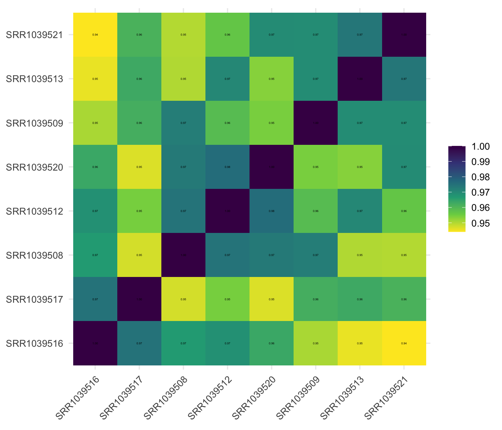
11.2 PCA Plot
get_pca_plot(
vista,
label = TRUE,
shape_by = "cell"
)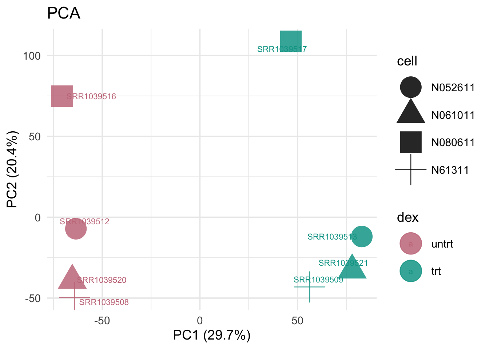
11.3 MDS Plot
get_mds_plot(
vista,
label = TRUE,
shape_by = "cell"
)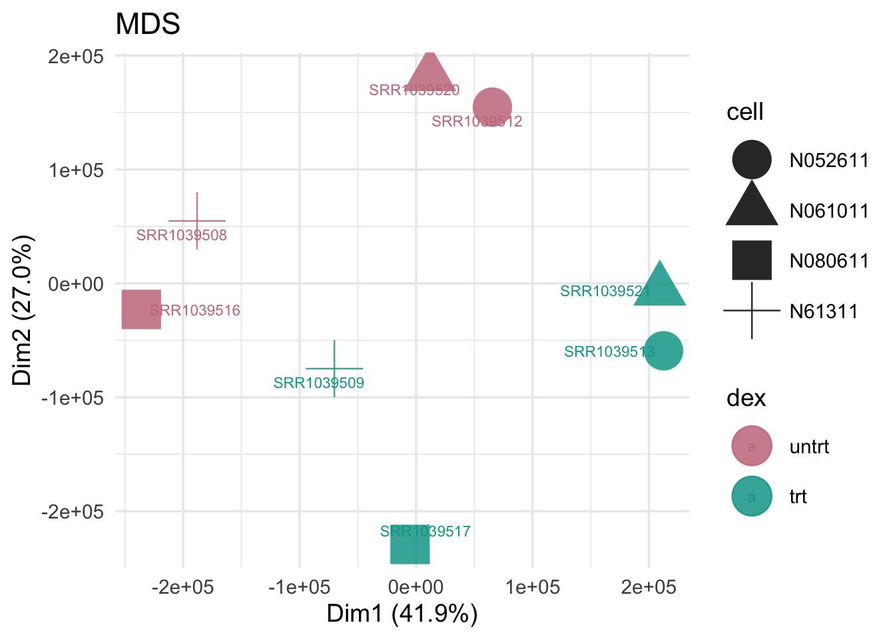
11.4 UMAP Plot
UMAP is optional and requires the uwot package.
if (has_pkg("uwot")) {
get_umap_plot(
vista,
label = TRUE,
shape_by = "cell"
)
}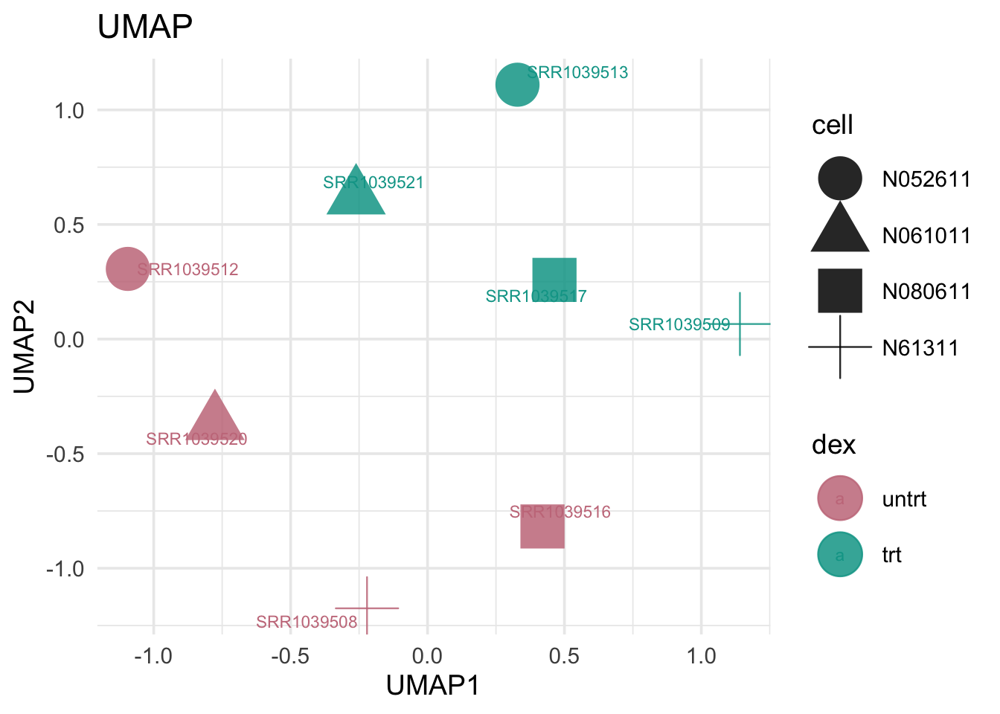
12 10. Differential Expression Plots
12.1 DEG Count Barplot
get_deg_count_barplot(vista)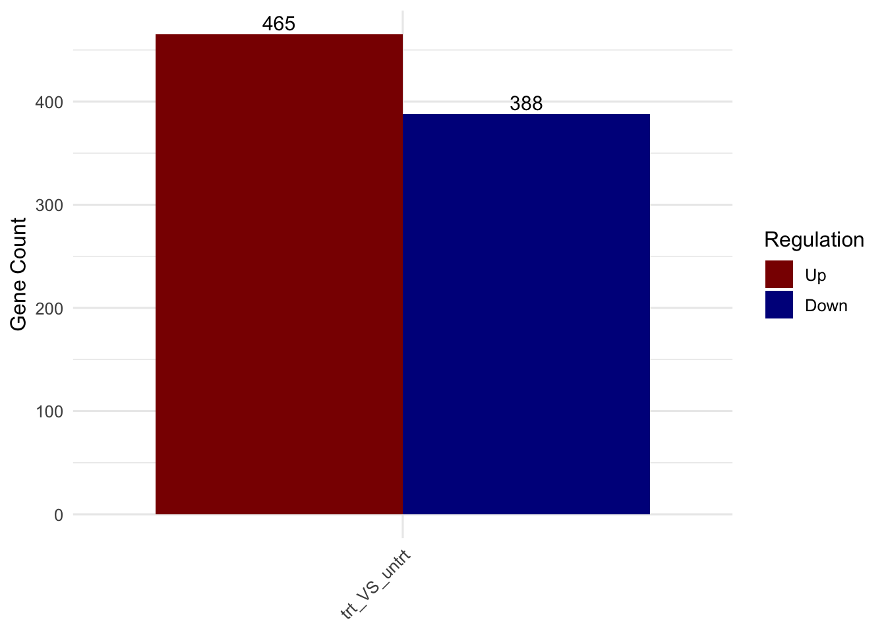
12.2 Volcano Plot
if (has_pkg("EnhancedVolcano")) {
get_volcano_plot(
vista,
sample_comparison = comp_name,
display_id = "SYMBOL"
)
}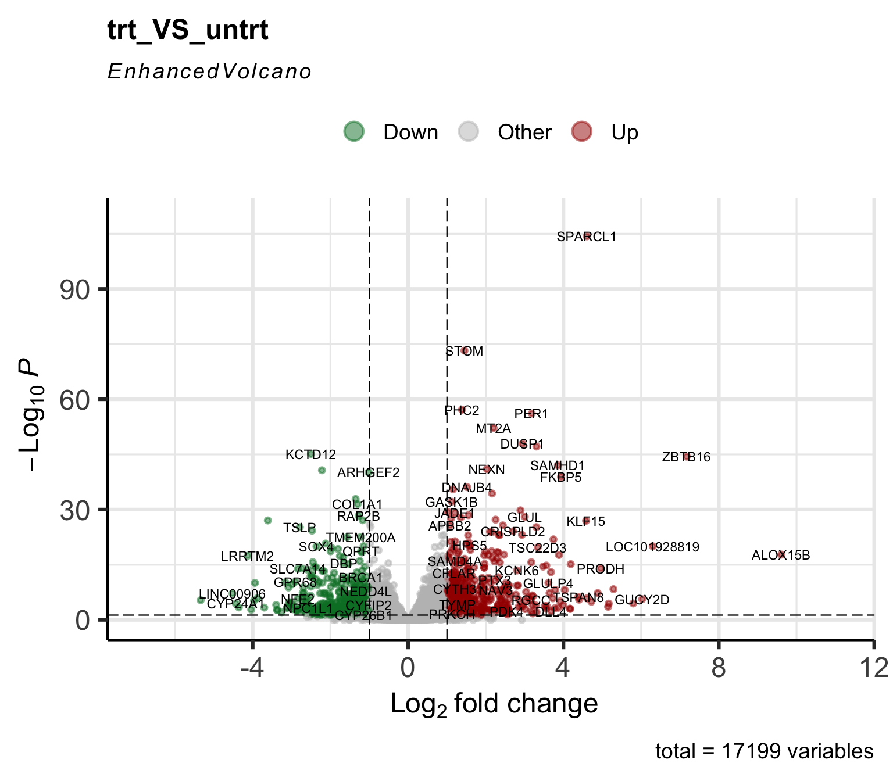
12.3 MA Plot
get_ma_plot(
vista,
sample_comparison = comp_name,
label_n = 10,
display_id = "SYMBOL"
)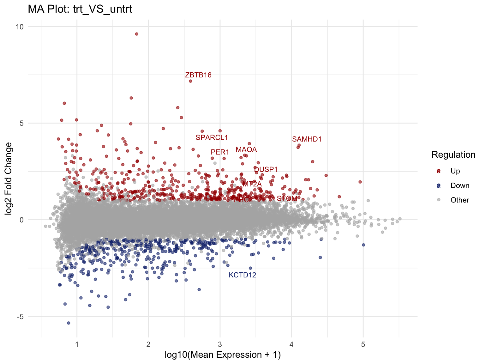
13 11. Expression Plots for Selected Genes
Expression plots help us inspect individual genes or sets of genes.
selected_genes <- head(top_up, 4)
selected_genes[1] "ENSG00000179593" "ENSG00000109906" "ENSG00000250978" "ENSG00000132518"13.1 Expression Heatmap
if (has_pkg("ComplexHeatmap")) {
get_expression_heatmap(
vista,
genes = c(head(top_up, 10), head(top_down, 10)),
sample_group = c("untrt", "trt"),
display_id = "SYMBOL",
show_row_names = TRUE,
summarise_replicates = FALSE,
annotate_columns = c("dex", "cell")
)
}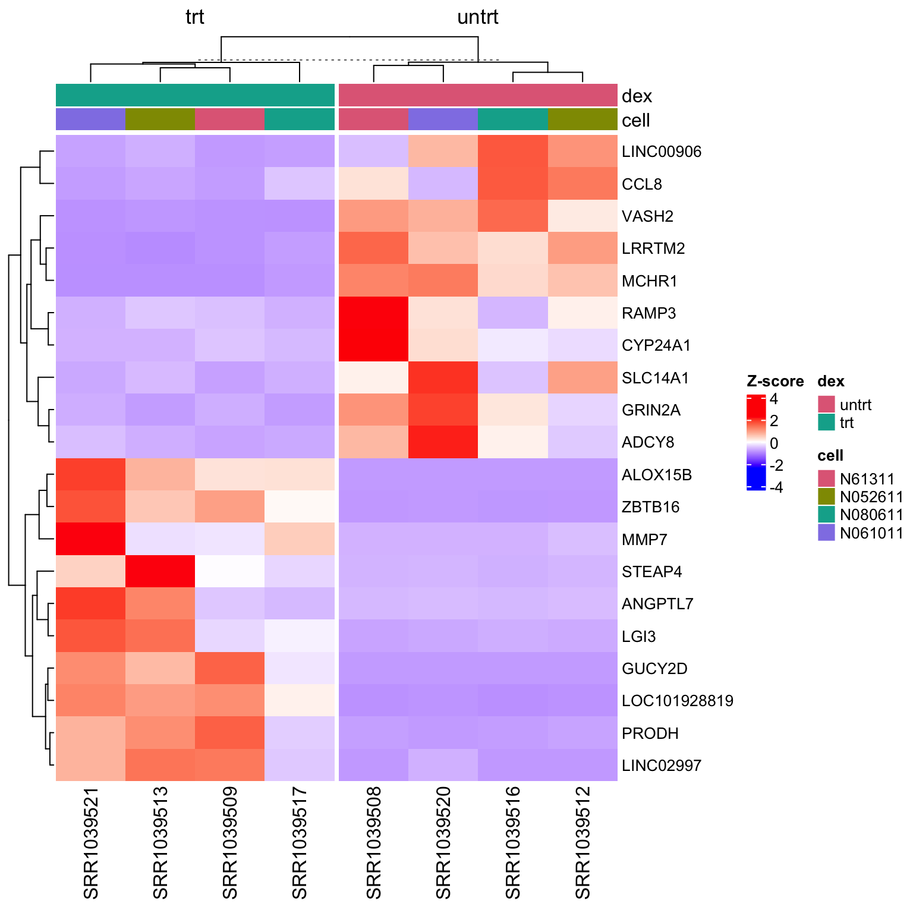
13.2 Barplot
get_expression_barplot(
vista,
genes = selected_genes,
display_id = "SYMBOL",
log_transform = TRUE,
stats_group = TRUE
) +
theme_minimal(base_size = 14)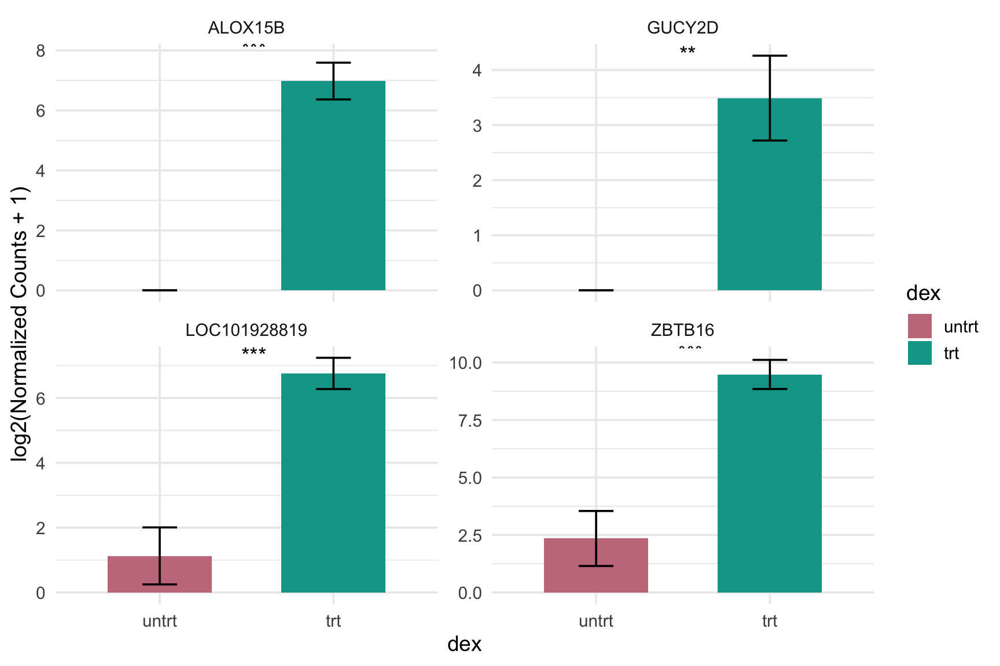
13.3 Boxplot
get_expression_boxplot(
vista,
genes = selected_genes,
display_id = "SYMBOL",
log_transform = TRUE,
facet_by = "gene",
stats_group = TRUE
) +
theme_minimal(base_size = 14)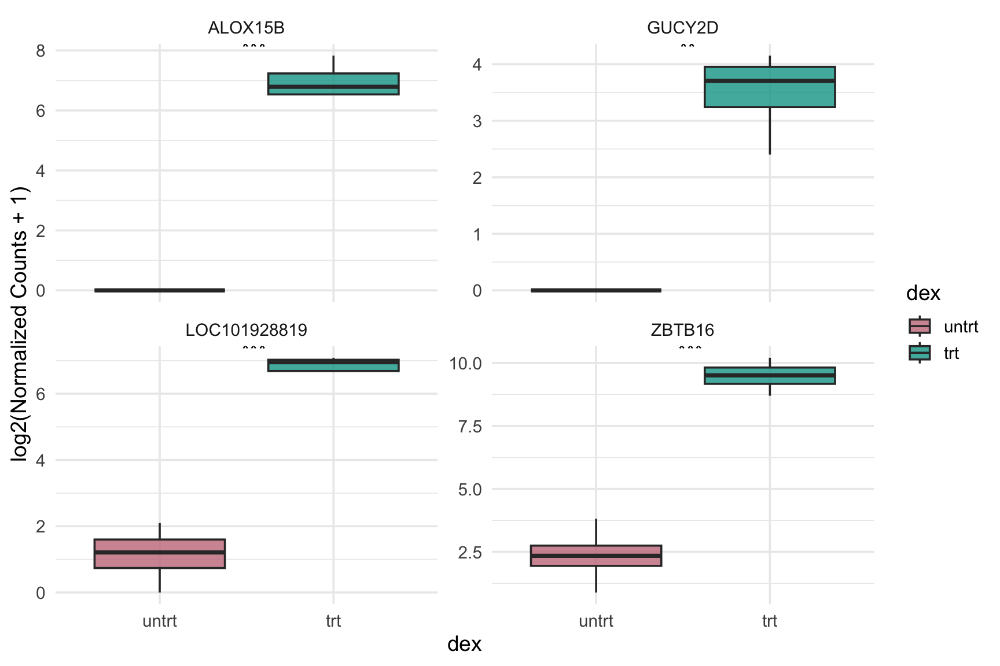
13.4 Violin Plot
get_expression_violinplot(
vista,
genes = selected_genes,
display_id = "SYMBOL",
log_transform = TRUE,
facet_by = "gene"
) +
theme_minimal(base_size = 14)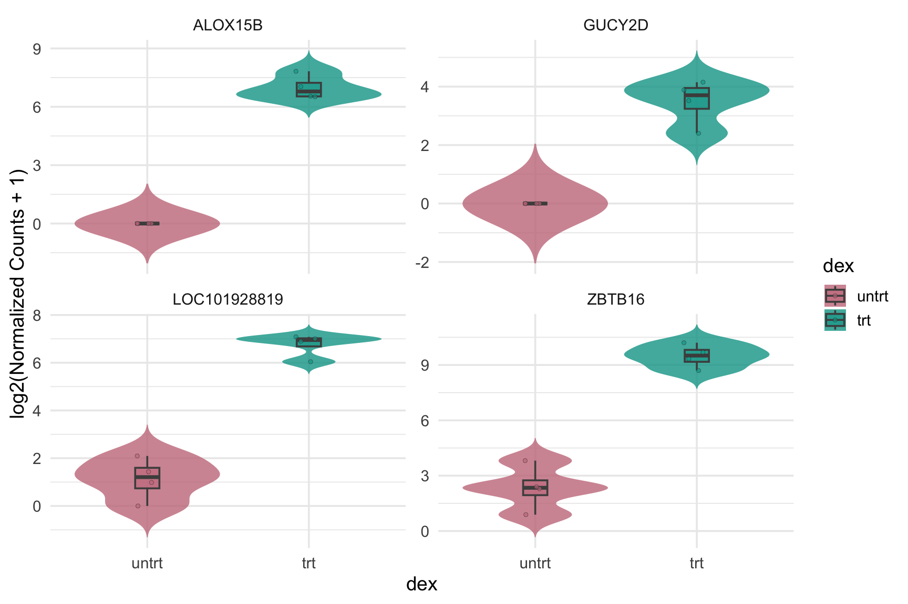
14 12. Fold-Change Analysis
Extract a matrix of log2 fold changes.
fc_matrix <- get_foldchange_matrix(vista)
head(fc_matrix) trt_VS_untrt
ENSG00000000003 -0.38027500
ENSG00000000419 0.20227695
ENSG00000000457 0.03272066
ENSG00000000460 -0.11851609
ENSG00000000971 0.43942357
ENSG00000001036 -0.24322719Plot fold changes for selected genes.
if (has_pkg("ComplexHeatmap")) {
get_foldchange_heatmap(
vista,
genes = c(head(top_up, 10), head(top_down, 10)),
display_id = "SYMBOL",
show_row_names = TRUE
)
}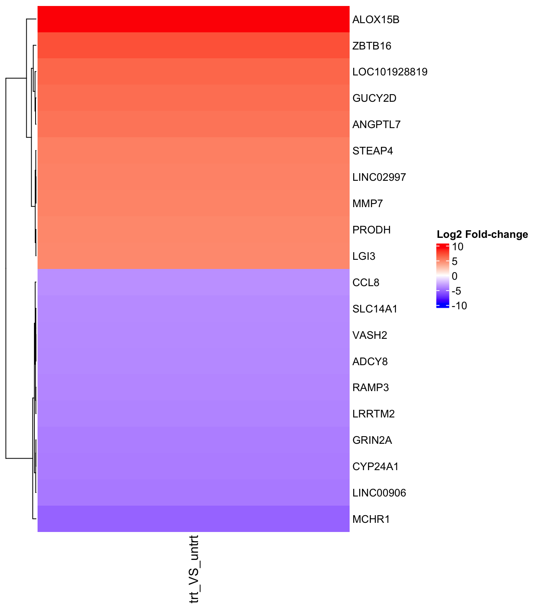
15 13. Before Functional Analysis
Functional analysis should be run after checking the DE result table.
Before running enrichment, confirm:
- Which comparison is being used.
- Which genes are Up, Down, or Other.
- Which cutoffs define significant genes.
- Which gene ID type is available.
- Whether annotation packages are installed.
comp_name[1] "trt_VS_untrt"cutoffs(vista)$log2fc
[1] 1
$pval
[1] 0.05
$p_value_type
[1] "padj"
$method
[1] "deseq2"
$min_counts
[1] 10
$min_replicates
[1] 2
$covariates
character(0)
$design_formula
NULL
$consensus_mode
NULL
$consensus_log2fc
NULL
$active_source
[1] "deseq2"table(de_table$regulation)
Down Other Up
388 16346 465 head(SummarizedExperiment::rowData(vista) |> as.data.frame()) baseMean SYMBOL
ENSG00000000003 709.77518 TSPAN6
ENSG00000000419 521.13616 DPM1
ENSG00000000457 237.56187 SCYL3
ENSG00000000460 58.03383 FIRRM
ENSG00000000971 5826.62312 CFH
ENSG00000001036 1284.41081 FUCA2
GENENAME
ENSG00000000003 tetraspanin 6
ENSG00000000419 dolichyl-phosphate mannosyltransferase subunit 1, catalytic
ENSG00000000457 SCY1 like pseudokinase 3
ENSG00000000460 FIGNL1 interacting regulator of recombination and mitosis
ENSG00000000971 complement factor H
ENSG00000001036 alpha-L-fucosidase 2
ENTREZID
ENSG00000000003 7105
ENSG00000000419 8813
ENSG00000000457 57147
ENSG00000000460 55732
ENSG00000000971 3075
ENSG00000001036 2519For this dataset, our original gene IDs are Ensembl IDs. We therefore use from_type = "ENSEMBL" in enrichment functions.
16 14. MSigDB Enrichment
Run Hallmark enrichment for upregulated genes.
if (has_pkg("msigdbr") && has_pkg("clusterProfiler") && has_pkg("org.Hs.eg.db")) {
msig_up <- get_msigdb_enrichment(
vista,
sample_comparison = comp_name,
regulation = "Up",
msigdb_category = "H",
species = "Homo sapiens",
from_type = "ENSEMBL",
orgdb = org.Hs.eg.db::org.Hs.eg.db
)
head(msig_up$enrich@result)
} ID
HALLMARK_TNFA_SIGNALING_VIA_NFKB HALLMARK_TNFA_SIGNALING_VIA_NFKB
HALLMARK_EPITHELIAL_MESENCHYMAL_TRANSITION HALLMARK_EPITHELIAL_MESENCHYMAL_TRANSITION
HALLMARK_ADIPOGENESIS HALLMARK_ADIPOGENESIS
HALLMARK_UV_RESPONSE_DN HALLMARK_UV_RESPONSE_DN
HALLMARK_HYPOXIA HALLMARK_HYPOXIA
HALLMARK_P53_PATHWAY HALLMARK_P53_PATHWAY
Description
HALLMARK_TNFA_SIGNALING_VIA_NFKB HALLMARK_TNFA_SIGNALING_VIA_NFKB
HALLMARK_EPITHELIAL_MESENCHYMAL_TRANSITION HALLMARK_EPITHELIAL_MESENCHYMAL_TRANSITION
HALLMARK_ADIPOGENESIS HALLMARK_ADIPOGENESIS
HALLMARK_UV_RESPONSE_DN HALLMARK_UV_RESPONSE_DN
HALLMARK_HYPOXIA HALLMARK_HYPOXIA
HALLMARK_P53_PATHWAY HALLMARK_P53_PATHWAY
GeneRatio BgRatio RichFactor
HALLMARK_TNFA_SIGNALING_VIA_NFKB 28/465 200/17994 0.14000000
HALLMARK_EPITHELIAL_MESENCHYMAL_TRANSITION 19/465 200/17994 0.09500000
HALLMARK_ADIPOGENESIS 15/465 200/17994 0.07500000
HALLMARK_UV_RESPONSE_DN 12/465 144/17994 0.08333333
HALLMARK_HYPOXIA 14/465 200/17994 0.07000000
HALLMARK_P53_PATHWAY 14/465 200/17994 0.07000000
FoldEnrichment zScore
HALLMARK_TNFA_SIGNALING_VIA_NFKB 5.417548 10.231969
HALLMARK_EPITHELIAL_MESENCHYMAL_TRANSITION 3.676194 6.198626
HALLMARK_ADIPOGENESIS 2.902258 4.406029
HALLMARK_UV_RESPONSE_DN 3.224731 4.365554
HALLMARK_HYPOXIA 2.708774 3.957880
HALLMARK_P53_PATHWAY 2.708774 3.957880
pvalue p.adjust
HALLMARK_TNFA_SIGNALING_VIA_NFKB 3.153757e-13 1.576878e-11
HALLMARK_EPITHELIAL_MESENCHYMAL_TRANSITION 1.136118e-06 2.840294e-05
HALLMARK_ADIPOGENESIS 2.272727e-04 3.787878e-03
HALLMARK_UV_RESPONSE_DN 3.664291e-04 4.580364e-03
HALLMARK_HYPOXIA 7.260526e-04 6.050438e-03
HALLMARK_P53_PATHWAY 7.260526e-04 6.050438e-03
qvalue
HALLMARK_TNFA_SIGNALING_VIA_NFKB 1.576878e-11
HALLMARK_EPITHELIAL_MESENCHYMAL_TRANSITION 2.840294e-05
HALLMARK_ADIPOGENESIS 3.787878e-03
HALLMARK_UV_RESPONSE_DN 4.580364e-03
HALLMARK_HYPOXIA 6.050438e-03
HALLMARK_P53_PATHWAY 6.050438e-03
geneID
HALLMARK_TNFA_SIGNALING_VIA_NFKB ENSG00000105835/ENSG00000122641/ENSG00000131979/ENSG00000107968/ENSG00000003402/ENSG00000131459/ENSG00000159200/ENSG00000185950/ENSG00000185022/ENSG00000142871/ENSG00000123358/ENSG00000221869/ENSG00000119508/ENSG00000130066/ENSG00000119138/ENSG00000162616/ENSG00000163661/ENSG00000162772/ENSG00000120129/ENSG00000143878/ENSG00000163110/ENSG00000099860/ENSG00000165030/ENSG00000067082/ENSG00000102804/ENSG00000179094/ENSG00000132334/ENSG00000138166
HALLMARK_EPITHELIAL_MESENCHYMAL_TRANSITION ENSG00000187498/ENSG00000122641/ENSG00000196569/ENSG00000105664/ENSG00000166741/ENSG00000142871/ENSG00000130066/ENSG00000163661/ENSG00000107796/ENSG00000070404/ENSG00000143878/ENSG00000137801/ENSG00000177283/ENSG00000099860/ENSG00000166825/ENSG00000114270/ENSG00000138829/ENSG00000060718/ENSG00000149591
HALLMARK_ADIPOGENESIS ENSG00000137767/ENSG00000187498/ENSG00000138074/ENSG00000241399/ENSG00000152583/ENSG00000079435/ENSG00000128311/ENSG00000148175/ENSG00000095637/ENSG00000170323/ENSG00000127083/ENSG00000211445/ENSG00000132170/ENSG00000138073/ENSG00000174697
HALLMARK_UV_RESPONSE_DN ENSG00000164442/ENSG00000153904/ENSG00000169715/ENSG00000142871/ENSG00000120129/ENSG00000078053/ENSG00000163110/ENSG00000132170/ENSG00000196975/ENSG00000163697/ENSG00000163513/ENSG00000060718
HALLMARK_HYPOXIA ENSG00000164442/ENSG00000118689/ENSG00000125148/ENSG00000185950/ENSG00000185022/ENSG00000169715/ENSG00000142871/ENSG00000159167/ENSG00000162772/ENSG00000120129/ENSG00000164105/ENSG00000116285/ENSG00000165030/ENSG00000067082
HALLMARK_P53_PATHWAY ENSG00000183044/ENSG00000085117/ENSG00000169908/ENSG00000117479/ENSG00000118689/ENSG00000169738/ENSG00000130066/ENSG00000148175/ENSG00000162772/ENSG00000109906/ENSG00000102804/ENSG00000132334/ENSG00000163083/ENSG00000179593
Count
HALLMARK_TNFA_SIGNALING_VIA_NFKB 28
HALLMARK_EPITHELIAL_MESENCHYMAL_TRANSITION 19
HALLMARK_ADIPOGENESIS 15
HALLMARK_UV_RESPONSE_DN 12
HALLMARK_HYPOXIA 14
HALLMARK_P53_PATHWAY 14Plot the enrichment result.
if (exists("msig_up") && !is.null(msig_up$enrich) && nrow(msig_up$enrich@result) > 0) {
get_enrichment_plot(msig_up$enrich, top_n = 10)
}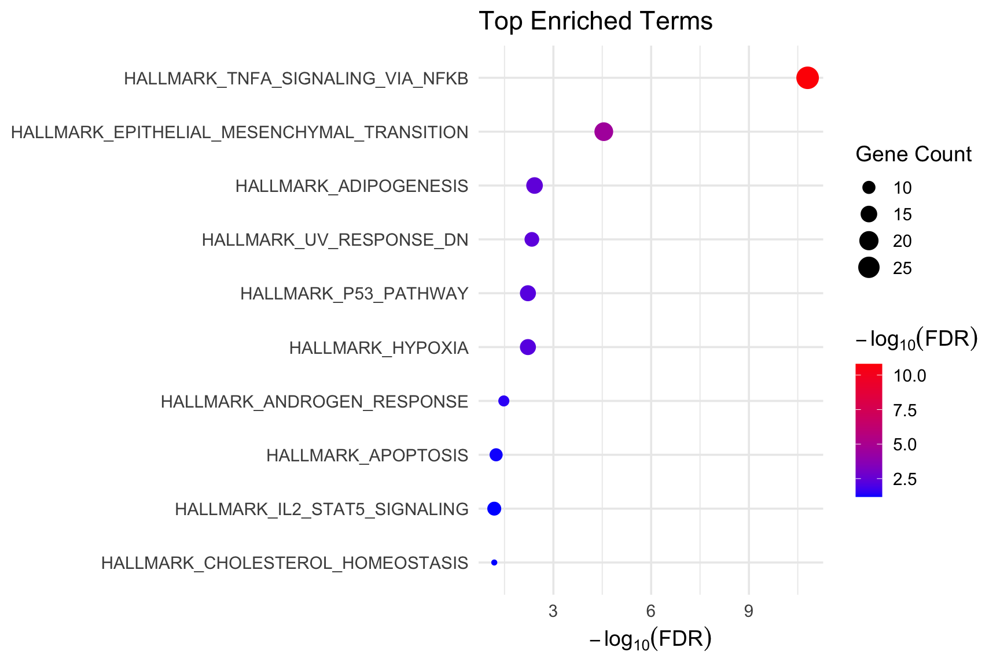
17 15. GO Enrichment
Run Gene Ontology Biological Process enrichment.
if (has_pkg("clusterProfiler") && has_pkg("org.Hs.eg.db")) {
go_bp <- get_go_enrichment(
vista,
sample_comparison = comp_name,
regulation = "Up",
ont = "BP",
species = "Homo sapiens",
from_type = "ENSEMBL",
orgdb = org.Hs.eg.db::org.Hs.eg.db
)
head(go_bp$enrich@result)
} ID Description GeneRatio
GO:0030198 GO:0030198 extracellular matrix organization 20/358
GO:0043062 GO:0043062 extracellular structure organization 20/358
GO:0045229 GO:0045229 external encapsulating structure organization 20/358
GO:0060986 GO:0060986 endocrine hormone secretion 8/358
GO:0032970 GO:0032970 regulation of actin filament-based process 22/358
GO:0071375 GO:0071375 cellular response to peptide hormone stimulus 20/358
BgRatio RichFactor FoldEnrichment zScore pvalue
GO:0030198 278/18842 0.07194245 3.786423 6.513722 3.993655e-07
GO:0043062 279/18842 0.07168459 3.772852 6.493819 4.228448e-07
GO:0045229 280/18842 0.07142857 3.759377 6.474008 4.475811e-07
GO:0060986 49/18842 0.16326531 8.592863 7.406296 3.589831e-06
GO:0032970 380/18842 0.05789474 3.047074 5.610242 4.017769e-06
GO:0071375 325/18842 0.06153846 3.238848 5.666000 4.476256e-06
p.adjust qvalue
GO:0030198 0.000877259 0.000877259
GO:0043062 0.000877259 0.000877259
GO:0045229 0.000877259 0.000877259
GO:0060986 0.004386731 0.004386731
GO:0032970 0.004386731 0.004386731
GO:0071375 0.004386731 0.004386731
geneID
GO:0030198 ENSG00000171819/ENSG00000100767/ENSG00000060718/ENSG00000168646/ENSG00000215018/ENSG00000003402/ENSG00000046653/ENSG00000114270/ENSG00000081052/ENSG00000102996/ENSG00000169031/ENSG00000116962/ENSG00000132170/ENSG00000187498/ENSG00000162493/ENSG00000137673/ENSG00000154736/ENSG00000196569/ENSG00000154734/ENSG00000102760
GO:0043062 ENSG00000171819/ENSG00000100767/ENSG00000060718/ENSG00000168646/ENSG00000215018/ENSG00000003402/ENSG00000046653/ENSG00000114270/ENSG00000081052/ENSG00000102996/ENSG00000169031/ENSG00000116962/ENSG00000132170/ENSG00000187498/ENSG00000162493/ENSG00000137673/ENSG00000154736/ENSG00000196569/ENSG00000154734/ENSG00000102760
GO:0045229 ENSG00000171819/ENSG00000100767/ENSG00000060718/ENSG00000168646/ENSG00000215018/ENSG00000003402/ENSG00000046653/ENSG00000114270/ENSG00000081052/ENSG00000102996/ENSG00000169031/ENSG00000116962/ENSG00000132170/ENSG00000187498/ENSG00000162493/ENSG00000137673/ENSG00000154736/ENSG00000196569/ENSG00000154734/ENSG00000102760
GO:0060986 ENSG00000174697/ENSG00000144891/ENSG00000163083/ENSG00000137869/ENSG00000156675/ENSG00000122641/ENSG00000132170/ENSG00000173918
GO:0032970 ENSG00000186575/ENSG00000132970/ENSG00000046653/ENSG00000107796/ENSG00000170873/ENSG00000159167/ENSG00000169750/ENSG00000079691/ENSG00000163431/ENSG00000111859/ENSG00000145675/ENSG00000141298/ENSG00000120899/ENSG00000174437/ENSG00000163171/ENSG00000179820/ENSG00000162493/ENSG00000168309/ENSG00000172403/ENSG00000146122/ENSG00000107104/ENSG00000102760
GO:0071375 ENSG00000174697/ENSG00000102554/ENSG00000144891/ENSG00000003402/ENSG00000095637/ENSG00000163083/ENSG00000004799/ENSG00000177674/ENSG00000116285/ENSG00000163884/ENSG00000132334/ENSG00000145675/ENSG00000122641/ENSG00000132170/ENSG00000197594/ENSG00000150907/ENSG00000185950/ENSG00000123358/ENSG00000107104/ENSG00000119508
Count
GO:0030198 20
GO:0043062 20
GO:0045229 20
GO:0060986 8
GO:0032970 22
GO:0071375 20if (exists("go_bp") && !is.null(go_bp$enrich) && nrow(go_bp$enrich@result) > 0) {
get_enrichment_plot(go_bp$enrich, top_n = 10)
}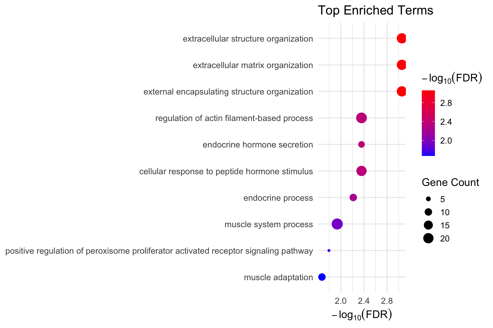
18 16. GSEA
GSEA uses a ranked list of genes instead of only a significant-gene list.
if (has_pkg("msigdbr") && has_pkg("clusterProfiler") && has_pkg("org.Hs.eg.db")) {
gsea_h <- get_gsea(
vista,
sample_comparison = comp_name,
set_type = "msigdb",
from_type = "ENSEMBL",
species = "Homo sapiens",
msigdb_category = "H",
orgdb = org.Hs.eg.db::org.Hs.eg.db,
pvalueCutoff = 0.05
)
head(gsea_h$enrich@result)
} ID
HALLMARK_ADIPOGENESIS HALLMARK_ADIPOGENESIS
HALLMARK_ANDROGEN_RESPONSE HALLMARK_ANDROGEN_RESPONSE
HALLMARK_TNFA_SIGNALING_VIA_NFKB HALLMARK_TNFA_SIGNALING_VIA_NFKB
HALLMARK_XENOBIOTIC_METABOLISM HALLMARK_XENOBIOTIC_METABOLISM
HALLMARK_OXIDATIVE_PHOSPHORYLATION HALLMARK_OXIDATIVE_PHOSPHORYLATION
HALLMARK_REACTIVE_OXYGEN_SPECIES_PATHWAY HALLMARK_REACTIVE_OXYGEN_SPECIES_PATHWAY
Description
HALLMARK_ADIPOGENESIS HALLMARK_ADIPOGENESIS
HALLMARK_ANDROGEN_RESPONSE HALLMARK_ANDROGEN_RESPONSE
HALLMARK_TNFA_SIGNALING_VIA_NFKB HALLMARK_TNFA_SIGNALING_VIA_NFKB
HALLMARK_XENOBIOTIC_METABOLISM HALLMARK_XENOBIOTIC_METABOLISM
HALLMARK_OXIDATIVE_PHOSPHORYLATION HALLMARK_OXIDATIVE_PHOSPHORYLATION
HALLMARK_REACTIVE_OXYGEN_SPECIES_PATHWAY HALLMARK_REACTIVE_OXYGEN_SPECIES_PATHWAY
setSize enrichmentScore NES
HALLMARK_ADIPOGENESIS 191 0.5168749 1.967889
HALLMARK_ANDROGEN_RESPONSE 92 0.4718030 1.641348
HALLMARK_TNFA_SIGNALING_VIA_NFKB 176 0.4218923 1.590346
HALLMARK_XENOBIOTIC_METABOLISM 157 0.4057317 1.522409
HALLMARK_OXIDATIVE_PHOSPHORYLATION 197 0.3885195 1.507835
HALLMARK_REACTIVE_OXYGEN_SPECIES_PATHWAY 46 0.4797262 1.489927
pvalue p.adjust qvalue
HALLMARK_ADIPOGENESIS 1.649346e-07 8.246728e-06 3.245811e-06
HALLMARK_ANDROGEN_RESPONSE 2.014551e-03 2.861235e-02 1.126147e-02
HALLMARK_TNFA_SIGNALING_VIA_NFKB 6.654978e-04 1.663744e-02 6.548293e-03
HALLMARK_XENOBIOTIC_METABOLISM 3.405479e-03 2.861235e-02 1.126147e-02
HALLMARK_OXIDATIVE_PHOSPHORYLATION 2.564687e-03 2.861235e-02 1.126147e-02
HALLMARK_REACTIVE_OXYGEN_SPECIES_PATHWAY 3.211156e-02 1.146841e-01 4.513827e-02
rank leading_edge
HALLMARK_ADIPOGENESIS 3091 tags=32%, list=18%, signal=26%
HALLMARK_ANDROGEN_RESPONSE 2552 tags=35%, list=15%, signal=30%
HALLMARK_TNFA_SIGNALING_VIA_NFKB 2304 tags=37%, list=13%, signal=32%
HALLMARK_XENOBIOTIC_METABOLISM 3423 tags=38%, list=20%, signal=31%
HALLMARK_OXIDATIVE_PHOSPHORYLATION 6508 tags=47%, list=38%, signal=30%
HALLMARK_REACTIVE_OXYGEN_SPECIES_PATHWAY 1379 tags=20%, list=8%, signal=18%
core_enrichment
HALLMARK_ADIPOGENESIS ENSG00000152583/ENSG00000211445/ENSG00000170323/ENSG00000174697/ENSG00000095637/ENSG00000127083/ENSG00000241399/ENSG00000148175/ENSG00000187498/ENSG00000128311/ENSG00000138074/ENSG00000138073/ENSG00000079435/ENSG00000132170/ENSG00000137767/ENSG00000122971/ENSG00000011566/ENSG00000174804/ENSG00000113916/ENSG00000138032/ENSG00000121691/ENSG00000177469/ENSG00000115361/ENSG00000126561/ENSG00000167772/ENSG00000154188/ENSG00000078070/ENSG00000101782/ENSG00000133027/ENSG00000136560/ENSG00000115159/ENSG00000175445/ENSG00000109016/ENSG00000010256/ENSG00000115255/ENSG00000109519/ENSG00000111684/ENSG00000205726/ENSG00000074416/ENSG00000117791/ENSG00000150768/ENSG00000162368/ENSG00000105281/ENSG00000099977/ENSG00000027697/ENSG00000148343/ENSG00000113594/ENSG00000171135/ENSG00000137547/ENSG00000162976/ENSG00000132423/ENSG00000114480/ENSG00000019144/ENSG00000170525/ENSG00000213341/ENSG00000119787/ENSG00000173559/ENSG00000117054/ENSG00000120675/ENSG00000111275/ENSG00000104823
HALLMARK_ANDROGEN_RESPONSE ENSG00000127954/ENSG00000096060/ENSG00000154734/ENSG00000163110/ENSG00000130066/ENSG00000134294/ENSG00000102804/ENSG00000120899/ENSG00000112576/ENSG00000112658/ENSG00000138696/ENSG00000116133/ENSG00000101608/ENSG00000081377/ENSG00000152642/ENSG00000104687/ENSG00000129128/ENSG00000183726/ENSG00000117143/ENSG00000205189/ENSG00000118515/ENSG00000125257/ENSG00000101558/ENSG00000138641/ENSG00000250722/ENSG00000072110/ENSG00000140526/ENSG00000198833/ENSG00000012660/ENSG00000145779/ENSG00000155850/ENSG00000113594
HALLMARK_TNFA_SIGNALING_VIA_NFKB ENSG00000179094/ENSG00000120129/ENSG00000163661/ENSG00000185950/ENSG00000119508/ENSG00000119138/ENSG00000162772/ENSG00000142871/ENSG00000131979/ENSG00000163110/ENSG00000162616/ENSG00000221869/ENSG00000099860/ENSG00000132334/ENSG00000130066/ENSG00000131459/ENSG00000185022/ENSG00000123358/ENSG00000138166/ENSG00000163739/ENSG00000108932/ENSG00000143878/ENSG00000102804/ENSG00000003402/ENSG00000165030/ENSG00000159200/ENSG00000107968/ENSG00000067082/ENSG00000122641/ENSG00000105835/ENSG00000176170/ENSG00000177426/ENSG00000136997/ENSG00000034152/ENSG00000100906/ENSG00000113916/ENSG00000106366/ENSG00000163734/ENSG00000166401/ENSG00000179431/ENSG00000126561/ENSG00000143384/ENSG00000023445/ENSG00000163659/ENSG00000145901/ENSG00000118503/ENSG00000196371/ENSG00000205189/ENSG00000181649/ENSG00000164949/ENSG00000117525/ENSG00000136560/ENSG00000118515/ENSG00000168685/ENSG00000163660/ENSG00000168884/ENSG00000142178/ENSG00000130164/ENSG00000070961/ENSG00000146278/ENSG00000125740/ENSG00000133639/ENSG00000170345/ENSG00000110944/ENSG00000172216
HALLMARK_XENOBIOTIC_METABOLISM ENSG00000189221/ENSG00000004799/ENSG00000125148/ENSG00000169738/ENSG00000167642/ENSG00000131979/ENSG00000163110/ENSG00000138356/ENSG00000174437/ENSG00000158125/ENSG00000129596/ENSG00000248144/ENSG00000117594/ENSG00000111846/ENSG00000141458/ENSG00000116704/ENSG00000081181/ENSG00000111885/ENSG00000108846/ENSG00000104687/ENSG00000121691/ENSG00000106366/ENSG00000126218/ENSG00000168874/ENSG00000138792/ENSG00000138207/ENSG00000144485/ENSG00000166347/ENSG00000133027/ENSG00000151632/ENSG00000010932/ENSG00000163686/ENSG00000126522/ENSG00000173599/ENSG00000131844/ENSG00000139112/ENSG00000148834/ENSG00000012660/ENSG00000105281/ENSG00000099977/ENSG00000109814/ENSG00000114850/ENSG00000134575/ENSG00000023839/ENSG00000165795/ENSG00000128989/ENSG00000109084/ENSG00000076864/ENSG00000111275/ENSG00000104823/ENSG00000106565/ENSG00000158828/ENSG00000139644/ENSG00000198682/ENSG00000187097/ENSG00000152700/ENSG00000100714/ENSG00000007933/ENSG00000197894/ENSG00000099984
HALLMARK_OXIDATIVE_PHOSPHORYLATION ENSG00000004799/ENSG00000119711/ENSG00000069535/ENSG00000166260/ENSG00000134333/ENSG00000110090/ENSG00000151729/ENSG00000143153/ENSG00000166347/ENSG00000182054/ENSG00000135070/ENSG00000165637/ENSG00000115840/ENSG00000010256/ENSG00000109519/ENSG00000060762/ENSG00000267855/ENSG00000167969/ENSG00000150768/ENSG00000137547/ENSG00000196177/ENSG00000110719/ENSG00000117410/ENSG00000091483/ENSG00000117054/ENSG00000172115/ENSG00000104823/ENSG00000140374/ENSG00000131100/ENSG00000167863/ENSG00000148672/ENSG00000151366/ENSG00000113732/ENSG00000128626/ENSG00000168291/ENSG00000127948/ENSG00000100142/ENSG00000130312/ENSG00000006695/ENSG00000213585/ENSG00000165672/ENSG00000072506/ENSG00000119689/ENSG00000100243/ENSG00000166411/ENSG00000204370/ENSG00000075415/ENSG00000112695/ENSG00000084754/ENSG00000100554/ENSG00000125356/ENSG00000138029/ENSG00000176340/ENSG00000075239/ENSG00000146701/ENSG00000141385/ENSG00000189043/ENSG00000159199/ENSG00000099800/ENSG00000110955/ENSG00000169020/ENSG00000155097/ENSG00000128609/ENSG00000167315/ENSG00000165688/ENSG00000165264/ENSG00000131495/ENSG00000178741/ENSG00000134375/ENSG00000117118/ENSG00000167792/ENSG00000169021/ENSG00000179091/ENSG00000023228/ENSG00000198836/ENSG00000166136/ENSG00000138495/ENSG00000127540/ENSG00000119421/ENSG00000165629/ENSG00000132305/ENSG00000111716/ENSG00000111775/ENSG00000105197/ENSG00000181991/ENSG00000143252/ENSG00000060971/ENSG00000004779/ENSG00000135940/ENSG00000100412/ENSG00000140983/ENSG00000099624/ENSG00000101365
HALLMARK_REACTIVE_OXYGEN_SPECIES_PATHWAY ENSG00000211445/ENSG00000198431/ENSG00000023909/ENSG00000173221/ENSG00000104687/ENSG00000121691/ENSG00000107438/ENSG00000131871/ENSG00000129355
log2err
HALLMARK_ADIPOGENESIS 0.6901325
HALLMARK_ANDROGEN_RESPONSE 0.4317077
HALLMARK_TNFA_SIGNALING_VIA_NFKB 0.4772708
HALLMARK_XENOBIOTIC_METABOLISM 0.4317077
HALLMARK_OXIDATIVE_PHOSPHORYLATION 0.4317077
HALLMARK_REACTIVE_OXYGEN_SPECIES_PATHWAY 0.3217759if (exists("gsea_h") && !is.null(gsea_h$enrich) && nrow(gsea_h$enrich@result) > 0) {
get_enrichment_plot(gsea_h$enrich, top_n = 10)
}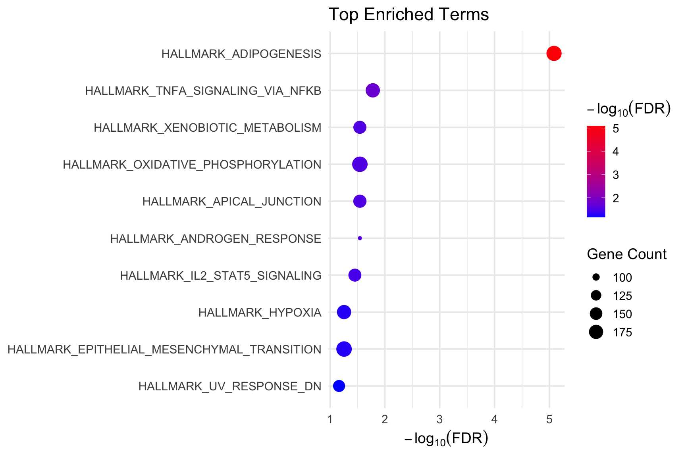
19 17. Pathway-Specific Heatmap
Use genes from enriched pathways and visualize their expression.
if (exists("msig_up") &&
!is.null(msig_up$enrich) &&
nrow(msig_up$enrich@result) > 0 &&
has_pkg("ComplexHeatmap")) {
get_pathway_heatmap(
x = vista,
enrichment = msig_up$enrich,
sample_group = c("untrt", "trt"),
top_n = 2,
gene_mode = "union",
max_genes = 50,
value_transform = "zscore",
display_id = "SYMBOL",
annotate_columns = c("dex", "cell"),
summarise_replicates = FALSE,
show_row_names = FALSE
)
}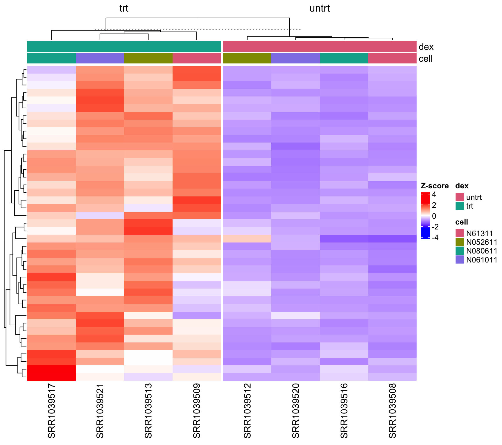
20 18. Export Results
Create an output directory.
dir.create("workshop_outputs", showWarnings = FALSE)Save the main DE result table.
save_vista_data(
vista,
what = "comparison",
sample_comparison = comp_name,
file = file.path("workshop_outputs", "vista_de_results.csv")
)Save a plot.
p <- get_ma_plot(
vista,
sample_comparison = comp_name,
label_n = 10,
display_id = "SYMBOL"
)
save_vista_plot(
p,
file = file.path("workshop_outputs", "ma_plot.png"),
width = 8,
height = 6
)Export a bundle of standard assets.
export_vista_assets(
vista,
out_dir = "workshop_outputs/vista_assets",
sample_comparison = comp_name,
display_id = "SYMBOL"
)Save the VISTA object for later.
saveRDS(vista, file = file.path("workshop_outputs", "airway_vista.rds"))21 19. Exercises
Try these after the main workflow runs. Start with the easy questions, then move to moderate and hard questions if you have time.
21.1 Easy Questions
These questions focus on reading objects, changing simple arguments, and understanding the output.
- How many genes and samples are present in
count_data? - Which column in
sample_metadatastores the sample names used by VISTA? - How many samples are in each
dexgroup? - What is the name of the comparison stored in
comp_name? - How many genes are labelled
Up,Down, andOtherinde_table$regulation? - Change
label_nin the MA plot from 10 to 20. What changes in the plot? - Make a PCA plot without sample labels by changing
label = TRUEtolabel = FALSE. - Change the point size in the PCA plot. Which value makes the plot easiest to read?
- Select the top 5 upregulated genes and print them.
- Select the top 5 downregulated genes and print them.
21.2 Moderate Questions
These questions require modifying code and interpreting the result.
- Create a barplot for the top 5 downregulated genes using
get_expression_barplot(). - Create a boxplot for the top 5 upregulated genes using
get_expression_boxplot(). - Change the expression heatmap so that it summarizes replicate groups instead of showing every sample.
- Make the expression heatmap using only the top 10 upregulated genes.
- Change the MA plot so that no genes are labelled. Which argument controls this?
- Run MSigDB enrichment for downregulated genes instead of upregulated genes.
- Make an enrichment plot for the downregulated MSigDB result.
- Export the DE result table using a new filename, such as
vista_de_results_updated.csv. - Save a PCA plot as a PNG file using
save_vista_plot(). - Compare the PCA and MDS plots. Do the samples group in a similar way?
21.3 Hard Questions
These questions are designed for deeper thinking, troubleshooting, and extending the workflow.
- Change the differential expression cutoff in
create_vista()fromlog2fc_cutoff = 1tolog2fc_cutoff = 0.5. How does the number of Up and Down genes change? - Change
pval_cutoff = 0.05topval_cutoff = 0.01. How does this affect the DEG summary? - Re-run the workflow using
method = "edger"instead ofmethod = "deseq2". Are the top genes similar? - Add
cellas a covariate increate_vista()usingcovariates = c("cell"). How does this change the results? - Try
method = "both"and inspect the available DE result sources. What is the difference between usingdeseq2,edger, andconsensusresults? - Use
set_de_source()to switch the active DE source if you created a multi-method VISTA object. - Run GO enrichment for downregulated genes and compare the top terms with the upregulated GO results.
- Use
get_pathway_genes()to extract genes from the top enriched pathway. Then make an expression heatmap for those genes. - Create a small report of your top biological interpretation: one sentence about the comparison, one sentence about the strongest DE genes, and one sentence about the top enriched pathway.
- Think about reproducibility: which files would you save or share so someone else can repeat your analysis?
22 20. Key Takeaways
- Always inspect data before analysis.
- Sample names in counts and metadata must match.
- A VISTA object keeps expression, metadata, annotations, and results together.
- QC plots should be checked before interpretation.
- Functional analysis should be run after DE results and gene IDs are understood.
- Exported tables and plots make the analysis easier to share and reproduce.
23 Session Information
sessionInfo()R version 4.6.0 (2026-04-24)
Platform: x86_64-apple-darwin20
Running under: macOS Tahoe 26.5
Matrix products: default
BLAS: /Library/Frameworks/R.framework/Versions/4.6-x86_64/Resources/lib/libRblas.0.dylib
LAPACK: /Library/Frameworks/R.framework/Versions/4.6-x86_64/Resources/lib/libRlapack.dylib; LAPACK version 3.12.1
locale:
[1] C.UTF-8/C.UTF-8/C.UTF-8/C/C.UTF-8/C.UTF-8
time zone: Australia/Sydney
tzcode source: internal
attached base packages:
[1] stats graphics grDevices utils datasets methods base
other attached packages:
[1] tibble_3.3.1 dplyr_1.2.1 ggplot2_4.0.3 VISTA_0.99.8
loaded via a namespace (and not attached):
[1] splines_4.6.0 ggplotify_0.1.3
[3] polyclip_1.10-7 enrichit_0.1.4
[5] lifecycle_1.0.5 httr2_1.2.2
[7] rstatix_0.7.3 edgeR_4.9.9
[9] doParallel_1.0.17 processx_3.9.0
[11] lattice_0.22-9 MASS_7.3-65
[13] backports_1.5.1 magrittr_2.0.5
[15] limma_3.68.0 rmarkdown_2.31
[17] yaml_2.3.12 otel_0.2.0
[19] ggtangle_0.1.2 EnhancedVolcano_1.30.0
[21] DBI_1.3.0 RColorBrewer_1.1-3
[23] abind_1.4-8 GenomicRanges_1.63.2
[25] purrr_1.2.2 BiocGenerics_0.58.0
[27] msigdbr_26.1.0 yulab.utils_0.2.4
[29] tweenr_2.0.3 rappdirs_0.3.4
[31] aisdk_1.1.0 gdtools_0.5.0
[33] circlize_0.4.18 IRanges_2.45.0
[35] S4Vectors_0.49.2 enrichplot_1.32.0
[37] ggrepel_0.9.8 tidytree_0.4.7
[39] RSpectra_0.16-2 codetools_0.2-20
[41] DelayedArray_0.37.1 DOSE_4.6.0
[43] ggforce_0.5.0 tidyselect_1.2.1
[45] shape_1.4.6.1 aplot_0.2.9
[47] farver_2.1.2 matrixStats_1.5.0
[49] stats4_4.6.0 Seqinfo_1.1.0
[51] jsonlite_2.0.0 GetoptLong_1.1.1
[53] Formula_1.2-5 iterators_1.0.14
[55] systemfonts_1.3.2 foreach_1.5.2
[57] tools_4.6.0 ggnewscale_0.5.2
[59] ragg_1.5.2 treeio_1.36.0
[61] Rcpp_1.1.1-1.1 glue_1.8.1
[63] SparseArray_1.11.13 xfun_0.57
[65] DESeq2_1.51.7 qvalue_2.44.0
[67] MatrixGenerics_1.24.0 withr_3.0.2
[69] fastmap_1.2.0 GGally_2.4.0
[71] callr_3.7.6 digest_0.6.39
[73] R6_2.6.1 gridGraphics_0.5-1
[75] textshaping_1.0.5 colorspace_2.1-2
[77] GO.db_3.23.1 RSQLite_2.4.6
[79] utf8_1.2.6 tidyr_1.3.2
[81] generics_0.1.4 fontLiberation_0.1.0
[83] FNN_1.1.4.1 httr_1.4.8
[85] htmlwidgets_1.6.4 S4Arrays_1.11.1
[87] scatterpie_0.2.6 ggstats_0.13.0
[89] uwot_0.2.4 pkgconfig_2.0.3
[91] gtable_0.3.6 blob_1.3.0
[93] ComplexHeatmap_2.28.0 S7_0.2.2
[95] XVector_0.51.0 clusterProfiler_4.20.0
[97] htmltools_0.5.9 fontBitstreamVera_0.1.1
[99] carData_3.0-6 clue_0.3-68
[101] scales_1.4.0 Biobase_2.71.0
[103] png_0.1-9 ggfun_0.2.0
[105] knitr_1.51 reshape2_1.4.5
[107] rjson_0.2.23 nlme_3.1-169
[109] curl_7.1.0 org.Hs.eg.db_3.23.1
[111] cachem_1.1.0 GlobalOptions_0.1.4
[113] stringr_1.6.0 parallel_4.6.0
[115] AnnotationDbi_1.73.1 pillar_1.11.1
[117] grid_4.6.0 vctrs_0.7.3
[119] ggpubr_0.6.3 car_3.1-5
[121] tidydr_0.0.6 cluster_2.1.8.2
[123] evaluate_1.0.5 magick_2.9.1
[125] cli_3.6.6 locfit_1.5-9.12
[127] compiler_4.6.0 rlang_1.2.0
[129] crayon_1.5.3 ggsignif_0.6.4
[131] labeling_0.4.3 forcats_1.0.1
[133] plyr_1.8.9 fs_2.1.0
[135] ggiraph_0.9.6 stringi_1.8.7
[137] viridisLite_0.4.3 BiocParallel_1.46.0
[139] assertthat_0.2.1 babelgene_22.9
[141] Biostrings_2.79.5 lazyeval_0.2.3
[143] GOSemSim_2.38.0 fontquiver_0.2.1
[145] Matrix_1.7-5 patchwork_1.3.2
[147] bit64_4.8.0 KEGGREST_1.51.1
[149] statmod_1.5.1 SummarizedExperiment_1.41.1
[151] igraph_2.3.0 broom_1.0.12
[153] memoise_2.0.1 ggtree_4.2.0
[155] bit_4.6.0 ape_5.8-1
[157] gson_0.1.0